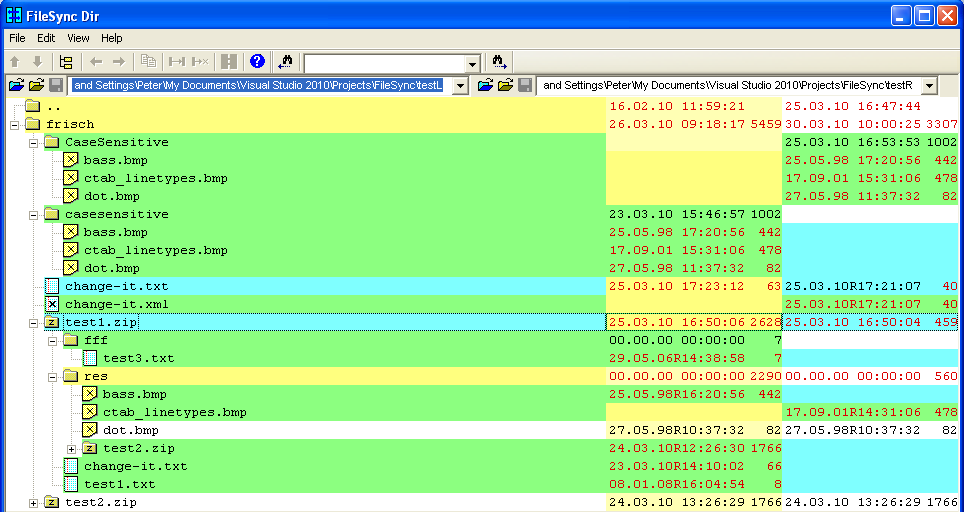
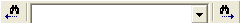
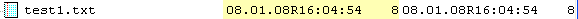
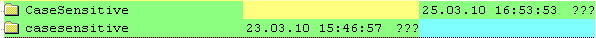

DirView
This view compares and synchronizes the contents of native directories, ZIP compressed files and ISO archives (R/O):

MKS project files *.pj are hidden.
Files are compared using CRC32 if sizes are equal but timestamps are different. Text comparison excludes code comments marked by /* ... */.
3.5 External Change Notification
Toolbar buttons or menu View:
| Prev Diff | Show previous difference above |
| Next Diff | Show next difference below |
See Dir Context Menu Expand all
Toolbar buttons or menu View:
| Prev | Return to previous DirView |
| Next | Show next DirView |
To copy the relative path names of the selected files and subdirectories there are several ways:
The selected files and / or subdirectories are copied to the corresponding directory tree, exiting files are replaced. If ZIP files are targeted the may need to be saved later. Copying large amounts of data may be cancelled.
To compare and synchronize files select two files with same or different name. To show them with the default view:
To choose a special view you may use the Dir Context Menu.
Show help in a browser window
To search for a string the following toolbar is provided:

To search for a string the following toolbar is provided:
The same commands are available from the menu File:
Files or Directories are equal:

Dir incomplete scan:
Extra Files or Dir containing extra (L/R):

Differences:
Newer date and different sizes are highlighted.
| Date/Time format | DD.MM.YY hh:mm:ss |
| File mode R/O | xx.xx.xxRxx:xx:xx |
File / Directory size is in bytes, or:
| ??? | pending: size unknown because of incomplete expansion |
| ### | dirty: please wait for unfinished background operation |
You may select single or multiple files or subdirectories, but sometimes only a single selection is meaningful.
Selecting a higher level subdirectory will unselect any entry below.
The context menu is different for files and subdirectories.
Basically it applies to all selected lines or at least the current line.
By click the right mouse button you get the context menu for a file or subdirectory. Some menu items are available depending on the view column:
| Name | Menu applies to files or directories for both sides if applicable. |
| Left date/size | Left side only |
| Right date/size | Right side only |
| Hex | View selection using Hex view. |
| Text | View selection using Text view. |
| XML | View selection using XML view. |
| Link Pair | combines two related files. |
| R / W | Toggle permission for selected files to R/W resp. R/O. |
| Open | The system defined standard application will be used to open the file. |
| Set Equal | removes difference highlighting for a pair of files. |
| Expand all | All subfolders are expanded |
| Expand partial | All subfolders except for a single side are expanded (recommended for compact comparison) |
| Collapse | Reduce expansion |
| Free | Collapse and unload subfolders |
| Link Pair | combines two related dirs. |
| Select diffs | Non equal entries are selected i.e. for copying |
| R / W | Toggle permission for selected files to R/W resp. R/O. |
| Explore | Open an Explorer window for the pointed directory. |
To open a file with a different application you may drag the selected file on that application. Because of different formats and capabilities this sometimes not works.
External changes of the shown files and directories are recognized in the background. The DirView will be updated automatically.
Menu View/Sort provides selection from some sorting rules for the sequence of folders and files shown.
Menu View/Project Files: Toggle showing or hiding MKS Project Files ".pj"